Le pere de tous les beaux Jardins de ce pays
Carolus Clusius in books and prints
Exhibition in Leiden University Library on the occasion of the
conference ‘Clusius in a New Context’, 23-25 September 2004.Carolus Clusius in books and prints
| 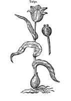 |
The Netherlandish humanist Carolus Clusius (1526-1609) is one of the most important European botanists of the sixteenth century. He is the author of innovative, internationally famous botanical publications, he introduced exotic plants such as the tulip and potato in the Low Countries, he was advisor of princes and aristocrats in various European countries, professor and director of the hortus botanicus in Leiden, and central figure in a vast European network of exchanges.
| Focusing on Clusius’ impressive achievements, the Scaliger Institute has |
| On the occasion of the conference ‘Clusius in a New Context’ (Leiden, 23- |
Carolus Clusius, or by his French name Charles de l’Escluse, was born in Arras on 19 February, 1526. His father Michel de l’Escluse, Seigneur de Watènes, was a nobleman who served as councillor at the provincial court of Artois. Charles went to university at Louvain, where he studied law under Gabriel Mudaeus. In 1546 he entered the famous Collegium Trilingue. In 1548 we find him briefly at Marburg as a law student, but his protestant conviction appears to have led him to Wittenburg, where he studied with the reformer Philip Melanchthon. On the advice of Melanchthon he changed his subject to medicine and botany. Early in 1550 he spent some time in Switzerland. In 1551 he was at Montpellier, studying with the botanical professor Guillaume Rondelet. The environment of Montpellier with its wealth of plants was particularly suited to develop and intensify his botanical tendencies. During these formative years he acquired no less than eight languages and an extensive knowledge on a wide variety of subjects. His first publication was a French translation of Rembert Dodoens’ Cruydt-Boeck, published in Antwerp in 1557.
| Having finished his studies, Clusius worked in various places and |
| In 1593 Clusius was finally appointed honorary professor of botany at the |
Select bibliography of secondary literature
Festschrift anlässlich der 400jährigen Wiederkehr der wissenschaftlichen Tätigkeit von Carolus Clusius (Charles de l’Escluse) im pannonischen Raum (Eisenstadt, 1973).
F.W.T. Hunger, Charles de l’Escluse (Carolus Clusius) Nederlandsch kruidkundige, 1526-1609, 2 vols. (’s-Gravenhage, 1927-43).
G. Istvánffi, Etudes et commentaires sur le code de l’Escluse augmentés de quelques notices biographiques (Budapest, [1898]-1900).
J. De Landtsheer, ‘Justus Lipsius and Carolus Clusius: a flourishing friendship’, in M. Laureys (ed.), The world of Justus Lipsius: A contribution towards his intellectual biography. Proceedings of a colloquium held under the auspices of the Belgian Historical Institute in Rome (Rome, 22-24 May 1997), pp. 273-295.
F. de Nave & D. Imhof (red.), De botanica in de Zuidelijke Nederlanden (einde 15de eeuw – ca. 1650). Tentoonstelling Museum Plantin-Moretus (Antwerpen, 1993).
A. Ubrizsy Savoia, Papers dealing with Carolus Clusius (Roma, 1988).
J. Theunisz, Carolus Clusius. Het merkwaardige leven van een pionier der wetenschap (Amsterdam, 1939).
H. Veendorp & L.G.M. Baas Becking, Hortus Academicus Lugduno-Batavus 1587-1937. (Leiden, 1990).
Catalogue
| 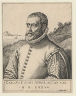 | 1. Portrait of Carolus Clusius. Engraving by Martinus Rota, Italian, 16th century. [University Library, Prentenkabinet I152 Rot/1]. |
| 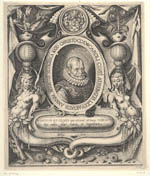 | 2. Portrait of Carolus Clusius. Engraving by Jacob de Gheijn II. This engraving was made for the edition of the Rariorum plantarum historia (Antwerp, 1601). [University Library, Prentenkabinet SIN 17577]. |
| 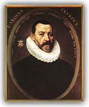 | 3. Jacob de Monte, Portrait of Carolus Clusius. Oil on canvas, 1585.
[University Library, Scaliger Institute]. v This portrait, which is attributed to Jacob de Monte, is the only known painted portrait of Clusius. It was made in 1585 when Clusius was in Vienna. On the left the coat of arms of Clusius is depicted. |
| 4. Engraving of the Hortus Botanicus after a drawing by J.C.
Woudanus. [University Library, Collectie Bodel Nijenhuis, P 315 - II - N
41] v This engraving by Willem Swanenburgh after J.C. Woudanus from 1610 depicts the Hortus Botanicus in bird’s-eye view. On both sides of the engraving two stems of bamboo can be seen with the inscription ‘bandus’. Underneath the engraving some of the natural curiosities from the Ambulacrum can be seen. |
|
| 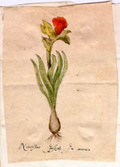 | 5a. Letter from Clusius to the Italian botanist Matteo Caccini, with a drawing by Clusius of a daffodil. [University Library, BPL 2724 14]. |
| 5b. Letter from Charles de Houchin to Carolus
Clusius dated 7 Februari 1585. [University Library, VUL 101]. |
|
|
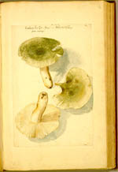 |
6. Carolus Clusius, Fungi from West Pannonia. 86 watercolors
on loose sheets; different sizes, mounted in a 17th-century binding, 87
ff. 435 x 275 mm. Szalonak, 1584. [University Library, BPL 303]. v During his stay in Austria Clusius often stayed with his Hungarian patron Balthasar Batthyány at the castle of Güssing, working on a study of fungi. This series of watercolours of fungi, which was commissioned for his host, is first of its kind in the history of botany and served as the basis for Clusius’ Fungorum in Pannoniis observatorum brevis historia (Antwerp, 1601), as part of the Rariorum plantarum historia. |
| 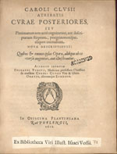 | 7. Carolus Clusius, Curae posteriores, seu plurimarum non antè
cognitarum, aut descriptarum stirpium, peregrinorumque aliquot animalium
novae descriptiones: Quibus & omnia ipsius opera, aliaque ab eo versa
augentur, aut illustrantur (Leiden: Raphelengius, 1611). Bound with:
Everard Vorstius, Oratio funebris in obitum V.N. et CL. Caroli Clusii
Atrebatis. Accesserunt variorum epicedia (Leiden: Raphelengius,
1611). [University Library, shelf-mark 532 E 18]. v Copy from the library of Isaac Vossius. In this posthumous work, many new plants and animals are described and illustrated in woodcut. Vorstius’ funeral oration also includes commemorative verses by, among others, Bonaventura Vulcanius, Fredericus Iamotius, Daniel Heinsius, Pertrus Cunaeus, Petrus Scriverius. |
| 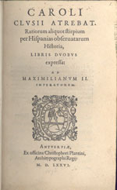 | 8. Carolus Clusius, Rariorum aliquot stirpium per Hispanias
observatarum Historia […] (Antwerp: Plantin, 1576). Bound up with:
Garcia d’Orta, Aromatum et simplicium alioquot medicamentorum apud
indos nascentium historia, 4th edn (Antwerp: Plantin, 1593) and
Christophorus Acosta, Aromatum & medicamentorum in Orientali India
nascentium […] (Antwerp: Plantin, 1593). [University Library,
shelf-mark 579 E 30]. v The Historia Stripium per Hispanias is the firdst independent scientific work by Clusius. His work has been described as the source from which our modern knowledge of genera originated. In this work the rare plants of Spain and Portugal are described. The printer, Christopher Plantin, ordered the hundreds of exquisite woodcuts from Pieter van der Borcht. Later they were also used also for the herbals of Lobelius and Dodonaeus. In the year 1576 Clusius also worked for the well-known cartographer Abraham Ortelius. |
| 9. Carolus Clusius, Rariorum aliqout stirpium, per Pannoniam,
Austriam & vicinas quasdam provincias oservatarum historia, IV libris
expressa (Antwerpen: Plantin, 1583). [University Library, shelf-mark
1413 F 18]. v A very important epoch of Clusius’life was initiated in 1573 when emperor Maximilian II invited him to found and direct a Hortus medicus at Vienna. Clusius not only carried out this task but also investigated, in three years time, the vegatation of Austria and Hungary. After Maximilian’s death in 1576 Clusius left the imperial court and after a trip to England, went back to Vienna to write his flora of Austria. |
|
| 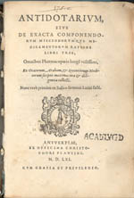 | 10. [Carolus Clusius], Antidotarium, sive de exacta componendorum miscendorumque medicamentorum ratione libri III, […] (Antwerp: Plantin, 1561). Bound with: Gulielmus Rondeletius, De ponderibus: sive de iusta quantitate & proportione medicamentorum Liber (Antwerp: Plantin, 1561). [University Library, shelf-mark 629 G 13]. |
| 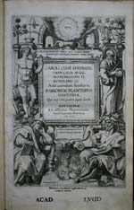 | 11. Carolus Clusius, Rariorum plantarum historia (Antwerp:
Plantin-Moretus, 1601). [University Library, shelf-mark 661 A 3]. v First edition of Clusius’ collected works. The first part synthesises material presented in Clusius’ Rariorum aliquot Stirpium per Pannoniam et Austriam Observatarum Historia (1583) and his Rariorum aliquot stirpium per Hispanias (1576), along with additions describing new plants. It is followed by the Fungorum historia, the first published treatise on fungi, which Clusius had composed during his stay with Count Batthyány in Hungary. Approximately one hundred new species are described here for the first time. The engraved title has a fine architectural border with representations of Adam and Solomon, and Theophrastus and Dioscorides, surrounded by pots with exotic plants, such as lilies and tulips (the latter were introduced into European cultivation by Clusius). The portrait by Jacob II de Gheijn, depicts Clusius in an oval cartouche incorporating a coat-of-arms and surrounded by pots of tulips, lilies, fritillaries, etc. The 1109 woodcuts, including 233 from the Spanish flora and 356 from the Austro-Hungarian flora, were cut by Gerard van Kampen after drawings by Clusius and Pieter van der Borcht. The remaining blocks were cut by the son of Virgil Solis in Frankfurt. |
|
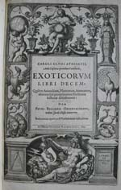
|
12. Carolus Clusius, Exoticorum libri decem: quibus animalium,
plantarum, aromatum, aliorumque peregrinorum fructuum historiae
describuntur: Item Petri Bellonis observationibus [...] (Leiden:
Raphelengius, 1605). [Bibliotheca Thysiana, shelf-mark 2202]. v First edition of the sequel to Clusius’ Rariorum plantarum historia (1601), containing further works not published in the former and mostly devoted to exotic plants and animals. The first six books contain new writings by Clusius, devoted to new species of plants, animals, and natural history from the new World, Southeast Asia, Africa, etc. This work is important for the number of new descriptions of non-European plants (and some animals) it contains, among which is the first published record and illustration of a South African plant. There is an extensive account of exotic seeds sent to him by various explorers. Books VII‑X comprise Clusius’ translations, with commentary, of da Orta, Acosta, Monardes and Belon. |
| 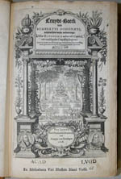 | 13. Rembertus Dodonaeus, Cruydt-Boeck, volgens sijne laetste
verbeteringe: Met bijvoegsels achter elck Capittel, uut verscheyden
Cruydtbeschrijvers: Item in’t laetste een beschrijvinge vande
Indiaensche Gewassen, meest getrocken uit de schriften van Carolus
Clusius (Leiden: Raphelengius, 1608). [University Library,
shelf-mark 659 A 7]. v Copy from the library of Isaac Vossius, with engraved title depicting a Hortus Botanicus and portrait medallions of Dodonaeus en Clusius. |